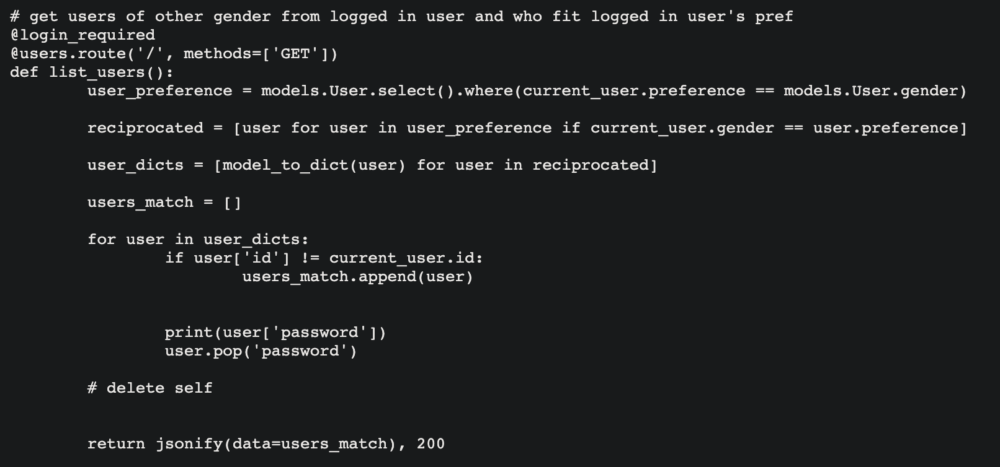

Love Talk was developed by my partner and I. We wanted to create a dating app because we thought it would be a fun challenge. We based the user’s matches on their sexual preferences to start and we planned to expand on other criteria later. In the development of this project, I faced two problems: 1) my partner and I had a completely different work ethic and skill set 2) React. To complete this project promptly, it required me taking on the leadership role and honing my management skills.
This project was built in five days. My partner and I came up with the idea of a dating app because they are popular. We both thought the intellectual challenge of creating one was intriguing. We enjoyed figuring out how we wanted to match our users and how we would allow them to interact with each other. Like my other pair programmed project, we set daily goals on what we were looking to achieve. The goal was to pair-program Flask and we would divide and conquer React. However, I learned early on that my partner needed a lot of guidance and support. Therefore, to finish the project on time, I had to take charge of the situation by changing the original plan. I decided to coach my partner through the project by pair-programming the entire project. Doing so was more time consuming, but I was determined to carry us to the end.
Logically, it was very interesting to think of all the ways we could potentially match our users and have them interact. I found the route that finds user matches to be the most intriguing part of the project. It was fun to think of how to logically write out how to find users who gender-matched the current user’s gender preference and of those matches, they reciprocated those feelings.
The following is the code to find user's matches:

At the end of this project, I feel that I had grown a lot as an individual. Not only did it reinforce concepts that I had learned but strengthened my soft skills. This project was in the final weeks of my Bootcamp and completing the project when I was mentally and physically fatigued was very rewarding. Looking back on the experience, I am very proud that I did what was needed to persevere. I am confident that I can do the same in any situation.
Flask | React
Pending Deployment